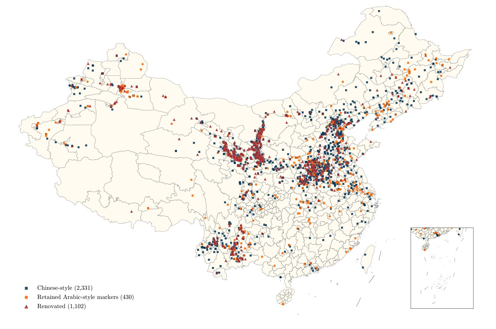

Falling Domes
Replacing the domes and minarets of mosques with Chinese-style roofs cut the number of halal restaurants within two kilometers by about a quarter, through fewer entrants, more exits and secular renaming.
Abstract
Between 2018 and 2022, Chinese authorities replaced the Arabic-style domes and minarets of mosques with Chinese-style roofs as part of a campaign to Sinicize religion. I study what this did to the commerce organized around mosques. I build a census of 3,863 mosques from historical satellite imagery, date the renovation of 1,102 of them, and link them to restaurant listings and business registrations. Comparing the neighborhoods of renovated mosques with those of mosques that kept their domes, using heterogeneity-robust difference-in-differences and controls located away from any renovation, I find that the number of halal restaurants within two kilometers falls by about a quarter and their share of all restaurants by about a fifth. Other restaurants show no robust change, and pharmacies and hardware stores show no decline. The decline builds over time, fades with distance, and extends to nearby mosques that kept their domes. Firm records trace it to fewer halal entrants, higher exit of halal incumbents relative to their non-halal neighbors, and renaming toward secular language. The effect is largest in dense mosque districts, where it runs through entry. The decline follows each mosque’s renovation rather than the rules on halal signs, and it is no larger where security procurement rose more, where city leaders changed, or where local governments paid more attention to religious governance, which points to a market response. Religious infrastructure helps organize local commerce.